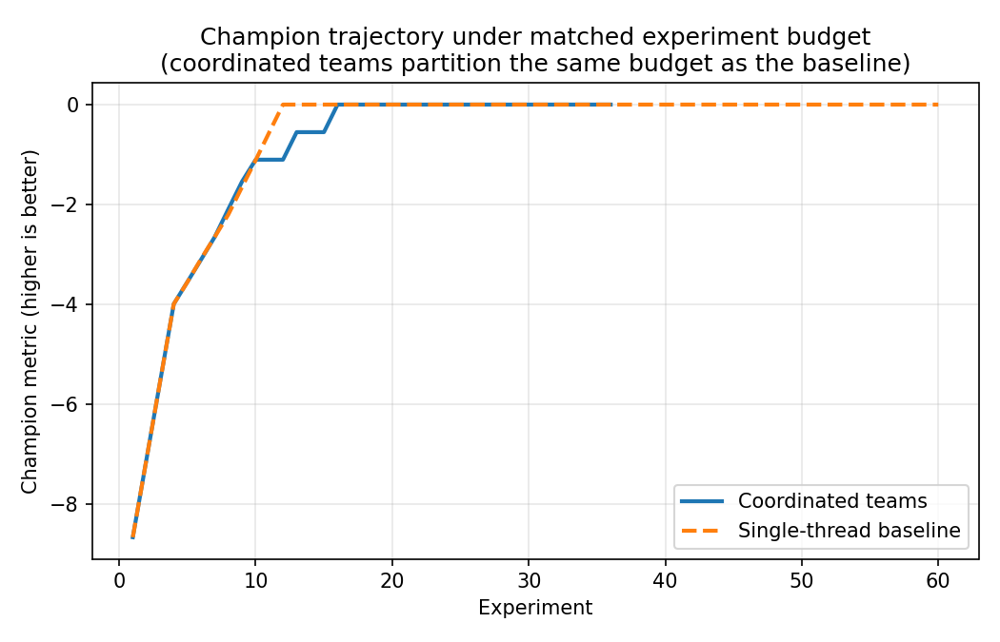
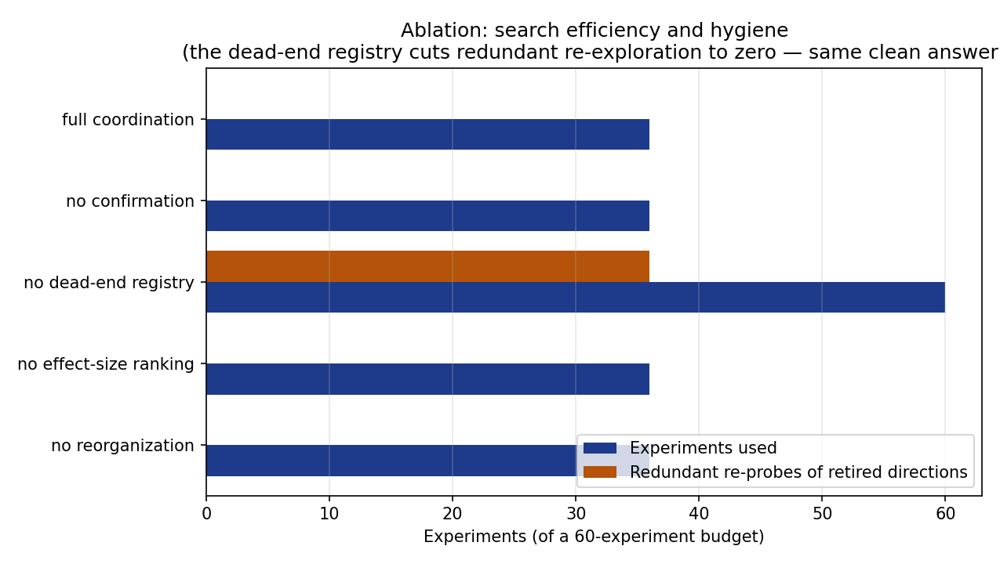

Results
All numbers below are produced by the analysis scripts in
scripts/ and written to output/data/ as
machine-readable JSON alongside the figures. They are deterministic:
re-running the scripts reproduces them exactly. The budget is fixed at
\(60\) experiments for every
configuration.
Matched-budget comparison
[@fig:comparison] plots the champion trajectory of the coordinated three-team configuration against the single-thread baseline over the shared \(60\)-experiment budget. The two curves track each other and converge to the same value.

run_search_comparison.py.The summary in output/data/search_comparison.json
reports the decisive quantities:
| Configuration | Reported metric | Clean metric | Experiments to optimum | Experiments used | Redundant re-probes |
|---|---|---|---|---|---|
| Coordinated teams | \(0.0012\) | \(0.0000\) | \(16\) | \(36\) | \(0\) |
| Single-thread baseline | \(0.0012\) | \(0.0000\) | \(12\) | \(60\) | \(36\) |
Both configurations reach the same clean ground-truth optimum (\(0.0000\), the global peak), and the clean-metric advantage of coordination over the baseline is exactly \(0.0000\). This is the honest headline: under a matched sequential budget, splitting the work into coordinated teams does not beat the undivided baseline on solution quality. If anything it is slightly slower to first reach the optimum — the coordinated run gets there at experiment \(16\) versus the baseline’s \(12\), because partitioning four axes across three teams interleaves the descent. We make no speedup claim, because the testbed is constructed so that none would be honest.
What the coordinated configuration does gain is search hygiene: it retires exhausted directions and stops, using only \(36\) of the \(60\) experiments with zero redundant re-probes, whereas the baseline — which runs without the dead-end registry — spends the full budget and wastes \(36\) experiments re-testing directions already known to fail. The coordination machinery changes how the budget is spent, not how good the final answer is.
Per-mechanism ablation
The testbed separates two distinct, independently measurable benefits
— noise robustness and search hygiene — from the mechanisms that do not
move the needle on this objective. [@fig:ablation] and [@fig:ablation_efficiency],
drawn from output/data/ablation.json, switch off one
mechanism at a time starting from the full coordinated
configuration.
![Paired horizontal bars compare final reported and clean metrics for 5 configurations: full coordination: reported 0.0012, clean 0.0000; no confirmation: reported 0.0156, clean 0.0000; no dead-end registry: reported 0.0012, clean 0.0000; no effect-size ranking: reported 0.0012, clean 0.0000; no reorganization: reported 0.0012, clean 0.0000. The largest absolute reported-minus-clean gap is 0.0156 for no confirmation. These are outcomes on this synthetic objective, not evidence of general agent performance.](../figures/ablation.png)
run_ablation.py.| Configuration | Reported metric | Clean metric | Noise inflation | Experiments used | Redundant re-probes |
|---|---|---|---|---|---|
| Full coordination | \(0.00121\) | \(0.0000\) | \(0.00121\) | \(36\) | \(0\) |
| No confirmation | \(0.01565\) | \(0.0000\) | \(0.01565\) | \(36\) | \(0\) |
| No dead-end registry | \(0.00121\) | \(0.0000\) | \(0.00121\) | \(60\) | \(36\) |
| No effect-size ranking | \(0.00121\) | \(0.0000\) | \(0.00121\) | \(36\) | \(0\) |
| No reorganization | \(0.00121\) | \(0.0000\) | \(0.00121\) | \(36\) | \(0\) |
Confirmation is the load-bearing mechanism for honesty. Removing noise-band confirmation leaves the clean metric untouched (the search still lands on the optimum) but inflates the reported metric from \(0.00121\) to \(0.01565\) — a roughly \(13\times\) increase in accepted noise. Without confirmation the search promotes a champion whose reported value overstates its true value by an order of magnitude more; with confirmation the reported metric stays close to the truth. This is exactly the failure mode noise-band confirmation is designed to prevent, and the testbed measures its size.
The dead-end registry is the load-bearing mechanism for efficiency. [@fig:ablation_efficiency] shows that removing it is the only ablation that changes the experiment budget profile: the registry-consulting proposer otherwise never re-probes a retired direction (redundant re-probes \(= 0\)) and halts at \(36\) experiments once every direction is exhausted, while the no-registry configuration burns all \(60\) experiments and wastes \(36\) of them re-testing known dead ends. Crucially, this hygiene gain leaves the clean metric unchanged at \(0.0000\) — the registry buys a leaner search, not a better answer.

run_ablation.py.Effect-size ranking and reorganization do not move any metric here. Removing either leaves the reported metric, clean metric, experiments used, and redundant re-probes all unchanged. On this small, separable objective with a deterministic proposer, those two mechanisms reshape the order in which directions are tried without changing the destination, the noise, or the efficiency within the budget. We report this plainly rather than dressing it up: both are correctly implemented and independently tested, but their benefit is about exploration bookkeeping on harder or more deceptive landscapes, not about measurable gains on this testbed.
What the numbers say
Four honest conclusions follow directly from the data:
- Under a matched budget, coordinated teams neither beat nor lose to the single-thread baseline on clean solution quality (advantage \(= 0.0000\)), and partitioning is in fact marginally slower to first reach the optimum (\(16\) vs \(12\) experiments).
- Noise-band confirmation delivers a measurable, reproducible robustness benefit: a \(\sim 13\times\) reduction in accepted noise (\(0.01565 \to 0.00121\) reported-vs-clean gap).
- The dead-end registry delivers a measurable efficiency benefit: redundant re-probes fall from \(36\) to \(0\) and the search halts at \(36\) rather than \(60\) experiments — with the clean answer unchanged.
- Effect-size ranking and reorganization are correctly implemented and ablatable, but do not by themselves change any measured quantity on this objective — a result we report rather than obscure.